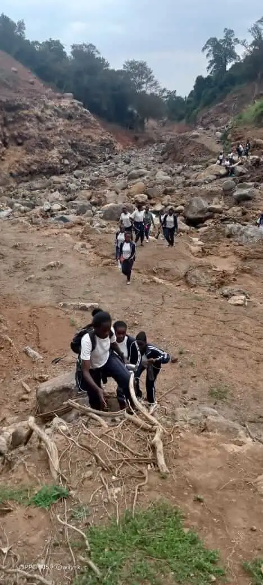

KIJABE HILLS & NATURE GUIDE
Kijabe Hills, Hot Springs & Waterfalls: What Hikers Should Know
Introduction
Kijabe Hills is known for its scenic Great Rift Valley landscapes, highland trails, waterfalls, river scenery and historic Old Kijabe Township. The area has also been associated with natural hot springs that have attracted hikers and visitors interested in exploring the wider Kijabe landscape.

Because the landscape has changed following the major 2024 flood and debris-flow disaster in the wider Kijabe and Mai Mahiu area, hikers should use current local information and avoid assuming that older routes remain unchanged.
Explore Kijabe Hills
Kijabe Hills sits along the eastern edge of the Great Rift Valley and offers a combination of escarpment viewpoints, forest and countryside trails and outdoor photography opportunities.
For hikers, the attraction is not only a single viewpoint but the wider landscape: cool highland conditions, changing vegetation, rocky sections, streams and expansive views.

Waterfalls and River Trails Around Kijabe
Water and seasonal streams are an important part of the Kijabe landscape. Hiking routes in the wider area can include river sections and waterfall scenery, depending on the route, season and current trail conditions.

River crossings and steep sections should never be treated casually, particularly after heavy rainfall. A local guide can advise on whether a particular route is appropriate on the day of the hike.
Kijabe Hot Springs: What Visitors Should Know
The Kijabe area has historically been associated with natural hot springs and has attracted hikers interested in combining outdoor trails with geothermal scenery.
However, the condition and accessibility of the historic hot-spring area changed significantly after the 2024 flood and debris flow. Older online descriptions, photographs and routes may therefore no longer represent current conditions.
If the hot springs are part of your intended visit, confirm current access and safety information with a knowledgeable local guide before travelling.
The 2024 Kijabe and Mai Mahiu Flood Disaster
The major April 2024 flood and debris-flow disaster affected communities and infrastructure in the Mai Mahiu area below the Kijabe escarpment. The event also reshaped sections of the surrounding natural landscape.

The event is important for hikers because natural drainage channels, river crossings and some former routes were affected. Modern hiking plans should therefore be based on current conditions rather than relying solely on older trail descriptions.
Kijabe Adventures encourages visitors to respect local guidance, stay on appropriate routes and avoid areas that guides identify as unsafe.
Current Access and Hiking Safety
Before visiting a waterfall, river trail or former hot-spring route, confirm whether it is currently accessible. Rainfall can rapidly change water levels and trail conditions.
- Use current local trail information.
- Follow your guide's instructions.
- Do not cross fast-flowing rivers.
- Avoid unstable slopes and recently affected areas.
- Carry adequate water and weather protection.
- Stay with your group.
For general preparation, see our Hiking Safety Tips.
Best Time to Visit Kijabe Hills
Kijabe can be visited throughout the year, but trail conditions vary with rainfall. Drier periods can make some routes easier to navigate, while rainy periods may produce greener landscapes and more active streams and waterfalls.
Always check the weather and current trail conditions before setting out.
Plan a Guided Kijabe Hills Hike
| Location | Kijabe, Kenya |
| Destination | Kijabe Hills |
| Upcoming Group Hike | Sunday, 4 October 2026 |
| Hike Fee | KSh 2,000 per person |
| Booking Fee | 30% |
| M-Pesa Till | 5440810 |
Visit Upcoming Hiking Events for current information and booking details.
Couples and groups looking for a more flexible experience can ask about private hikes and special offers.
Frequently Asked Questions
Are Kijabe Hills and the hot springs the same attraction?
No. Kijabe Hills refers to the wider hiking and escarpment landscape, while the hot springs are a separate natural attraction in the wider Kijabe area.
Can I still visit the Kijabe hot springs?
Access and conditions have changed following the 2024 flood. Confirm current access with local guides before planning a visit.
Are there waterfalls around Kijabe?
Yes. The wider Kijabe hiking area includes waterfall and river scenery, although the exact route and accessibility can vary with season and trail conditions.
Is Kijabe Hills suitable for beginners?
Some guided routes can be suitable for beginners, but difficulty varies by route. Ask the guide about the current route before booking.
Explore Kijabe With Local Guides
Discover Kijabe Hills, scenic trails and the wider landscape with a guided hiking experience.
Book Upcoming Hike Private Group Hike